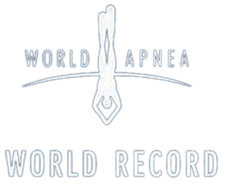
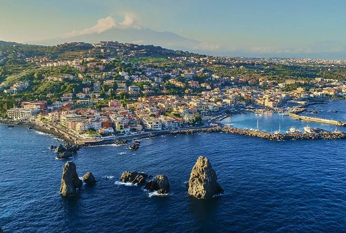

2º Blue World FreedivingAIDA Depth Trophy
L'evento
Quattro giorni di apnea in profondità nel mare di Acireale e Acitrezza
Atleti di vertice da più nazioni scendono lungo un cavo verticale in un solo respiro, davanti ai Faraglioni e alle Isole Ciclopi. È una competizione ufficiale AIDA con World Record Status: le profondità raggiunte qui possono essere omologate come record del mondo.
Gli atleti più profondi
Al via atleti da diverse nazioni. Questi sono i nomi che hanno già portato la disciplina alle sue profondità massime.
World Record Opportunity
Un record del mondo può nascere qui

Non sappiamo se accadrà. Sappiamo che il mare, gli atleti e il protocollo ufficiale ci sono.
Petar Klovar e Zsófia Törőcsik detengono i record mondiali di immersione libera; Sanda Delija, primatista fino ad aprile 2026 con 103 metri, è pronta a riprenderselo. Se uno di loro sceglierà di tentare un nuovo primato durante la competizione, il mare di Acireale e Acitrezza entrerà nella storia dell'apnea. Le profondità annunciate vengono comunicate solo la sera prima di ogni giornata di gara.
Ultime notizie
Aggiornamenti
Dicono di noi
Rassegna stampa
Programma
14–17 ottobre 2026
Quattro giornate con sessioni in acqua davanti alla costa di Acireale e Acitrezza.
Come seguire l'evento
Dal vivo, in streaming, sui social
Dal vivo
La gara si svolge in mare aperto, su una piattaforma davanti alla costa. I punti da cui seguire l'evento da terra e le attività aperte al pubblico vengono indicati nel programma.
Streaming e risultati
Live e risultati in tempo reale verranno attivati nei giorni di gara.
Social
Annunci, dietro le quinte, interviste e contenuti dal mare.
Foto
Gli atleti in azione
Le prime immagini dei protagonisti. La galleria si aggiorna con foto ufficiali dalla presentazione, dagli allenamenti e dalle giornate di gara.
Video e interviste
Le voci della profondità
Territorio
Acireale, Acitrezza, le Isole Ciclopi
Il borgo dei Malavoglia, i Faraglioni, l'isola Lachea e la riviera dei limoni, con l'Etna alle spalle. Un tratto di mare protetto, profondo a pochi metri dalla costa, che ospita atleti, staff e pubblico in un ottobre ancora estivo.

Come arrivare: aeroporto di Catania a circa 30 minuti; Acireale e Acitrezza sono collegate dalla SS114 e dall'autostrada A18 (uscita Acireale). Consigli su dove dormire e mangiare verranno aggiunti con il programma.
Organizzazione
Chi porta la gara in mare
Due diving center, un solo campo gara: due squadre che conoscono questo mare e lavorano insieme per portare la competizione tra Acireale e Acitrezza.
Partner e istituzioni
Chi rende possibile l'evento
Partner
Patrocini e istituzioni
La tua azienda vuole sostenere l'evento? Scrivici.
Contatti